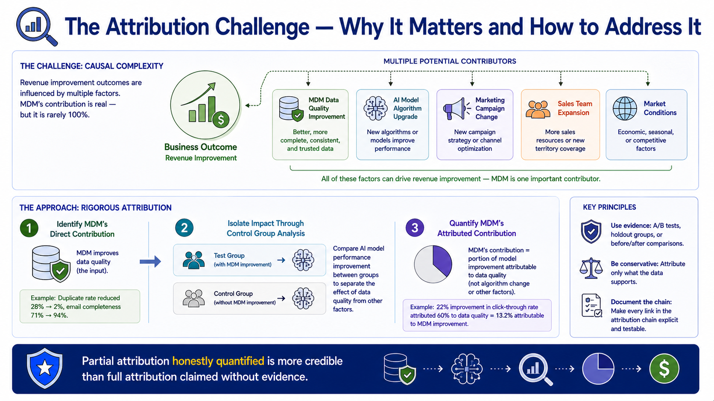
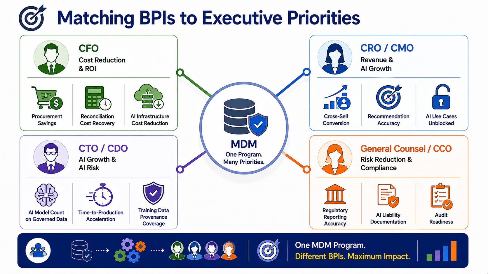
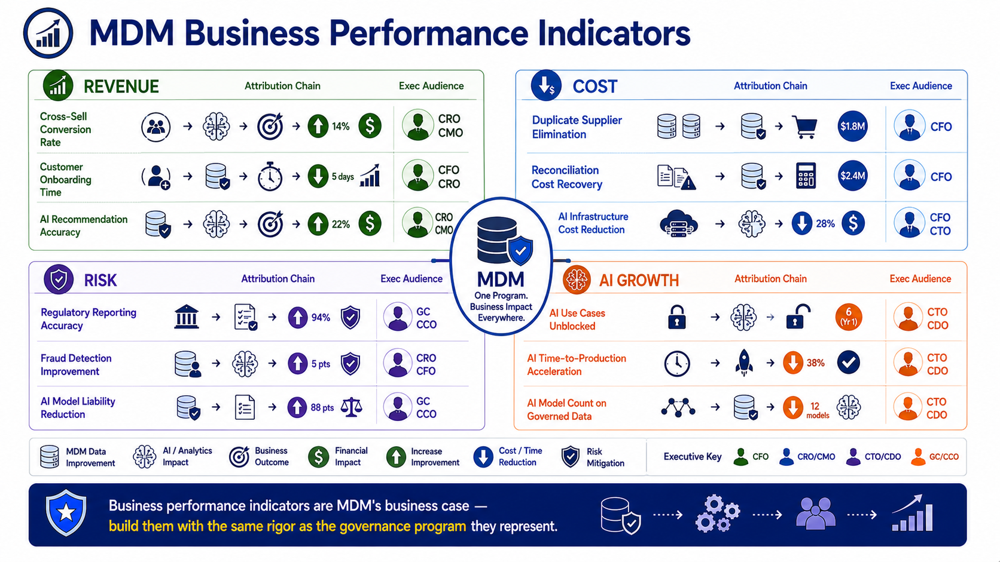

Business Performance Indicators
Module support notes
The Attribution Challenge
The attribution challenge in MDM value measurement is real — most business outcomes have multiple contributing factors, and claiming that MDM alone drove a revenue improvement will be challenged by anyone who knows that other variables also changed. The appropriate response is not to abandon attribution, but to approach it rigorously — using control groups, A/B tests, and documented causal chains that isolate MDM's contribution from other factors.
Partial attribution honestly quantified is significantly more credible in executive conversations than full attribution claimed without a defensible methodology. An MDM program that demonstrates a documented, validated 30% contribution to a revenue improvement is making a stronger case than one that claims 100% attribution without evidence.
Tip
Document your attribution methodology before you document your results — not after. When you know in advance how you will isolate MDM's contribution from other variables, you can set up the measurement correctly from the start. Attribution documented retrospectively is always weaker than attribution designed prospectively, because the control conditions are harder to establish after the fact.

Communicating BPIs to Different Executive Audiences
Effective BPI communication requires selecting the subset of available BPIs that is most relevant to each executive's specific priorities — rather than presenting the full BPI portfolio and expecting each executive to find the metrics they care about. A CFO whose primary concern is cost efficiency responds to procurement savings and reconciliation cost recovery. A CDO whose primary commitment is an AI transformation agenda responds to AI use cases unblocked and time-to-production acceleration. A General Counsel whose primary concern is AI regulatory risk responds to training data provenance coverage and audit readiness.
Knowing which metrics resonate with which audience — and leading with those metrics in each executive conversation — is the communication discipline that makes MDM measurement effective rather than merely comprehensive.
Note
The same MDM program produces BPIs that resonate differently with each executive audience — present the relevant subset to each. CFO: cost reduction and ROI. CRO/CMO: revenue impact and AI-powered growth. CTO/CDO: AI model count on governed data, time-to-production acceleration, training data provenance coverage. General Counsel/CCO: regulatory reporting accuracy, AI liability documentation, audit readiness.

Business performance indicators are MDM's business case — build them with the same rigor as the governance program they represent.
